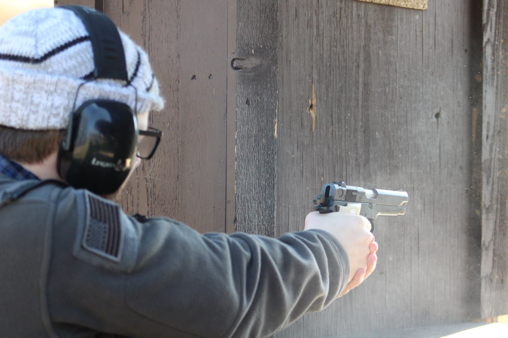

A Student Reporter's Guide to Covering Gun Violence

For starters this won't answer all your questions
So covering gun violence is complicated. This should surprise absolutely no one. There are a multitude of factors to consider when covering gun violence being: inequality, race, the war on drugs, mental health, policing as a whole, trauma, and many other factors.
I don’t have answers for all of those factors. I do however know quite a bit about requesting data related to firearms from law enforcement. I also happen to know a few things about firearms in general. In this guide I will provide you with what I believe are helpful facts to know about firearms. This isn’t a safety course!
Rather I will explain to you the types of firearms that you may come across during your reporting. I’ll help you distinguish, ideally, one gun from another along with learning what kinds of guns are more likely to be used in a crime.
There is a handy glossary going over key terms, organizations and other tidbits that you can reference during your reporting but that’s not all.
I also breakdown two of my own stories that both relate to guns and gun violence from start to finish. The goal is to make it as in depth as possible but as of now it is a little bare bones. The goal is to make this guide not necessarily fun to read given the subject matter but rather something that feels lived in. So there may be some quirks or references but it is to keep you engaged.
My experience covering gun violence
So, by the end of this year (2020)-- I will have worked at The Columbia Missourian for two years (you can find my stories here). For the most part I covered the courthouse and public safety for the paper. As it turns out, sadly, 2019 was one of the worst years on record for Columbia regarding gun violence. I covered everything ranging from vigils for victims to police press conferences asking for the communities help to ID suspects. Throughout all of this I was working on a long term story about gun violence in Missouri. The story examined data that I had requested from The Bureau of Alcohol Tobacco and Firearms via a FOIA. The data in question helped answer a number of questions including the following:
- What was the average time to crime for a firearm?
- How many trace requests were filed by the ATF each year and the demographics of the offenders?
- What was the most common type of firearm traced to a crime?
- How many instances were minors having guns traced to them?
I go over, not in great detail, how I ended up acquiring the data here . More recently I secured the inventory of the Columbia Police Departments evidence locker. The specific part of the locker I acquired were the firearms in CPD's custody. I'll explain to you how I got that data and what exactly was in it here. Lastly, excluding the graphics on the "How to Request Data" page, all of the assets, whether it be graphics, tables, screenshots, etc. were all done by myself (excluding the pictures of myself-- I got my friends' permission to use them).
.